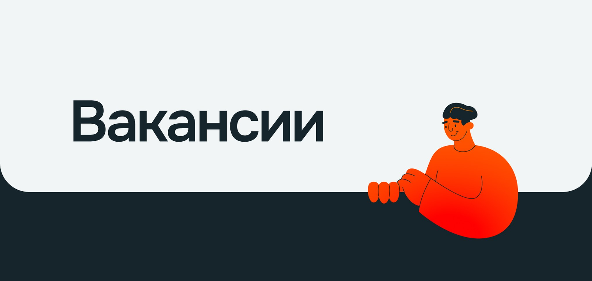
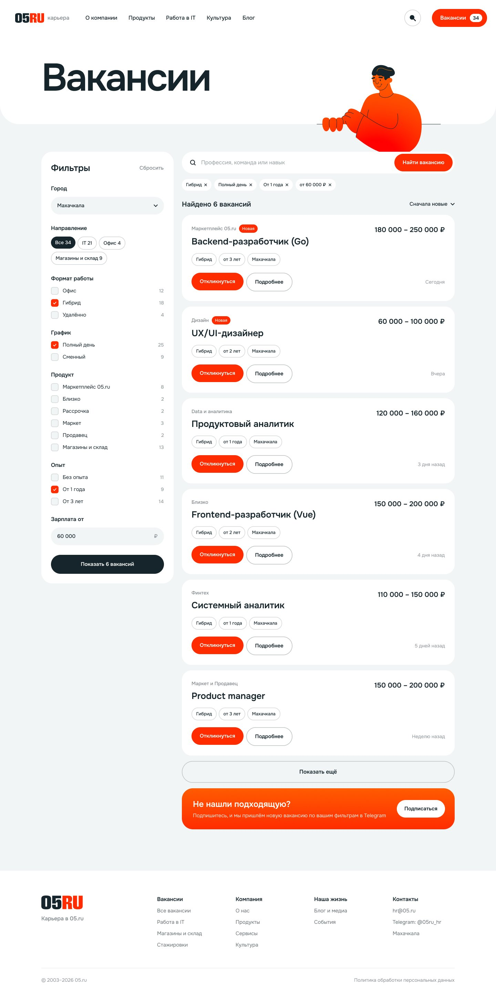
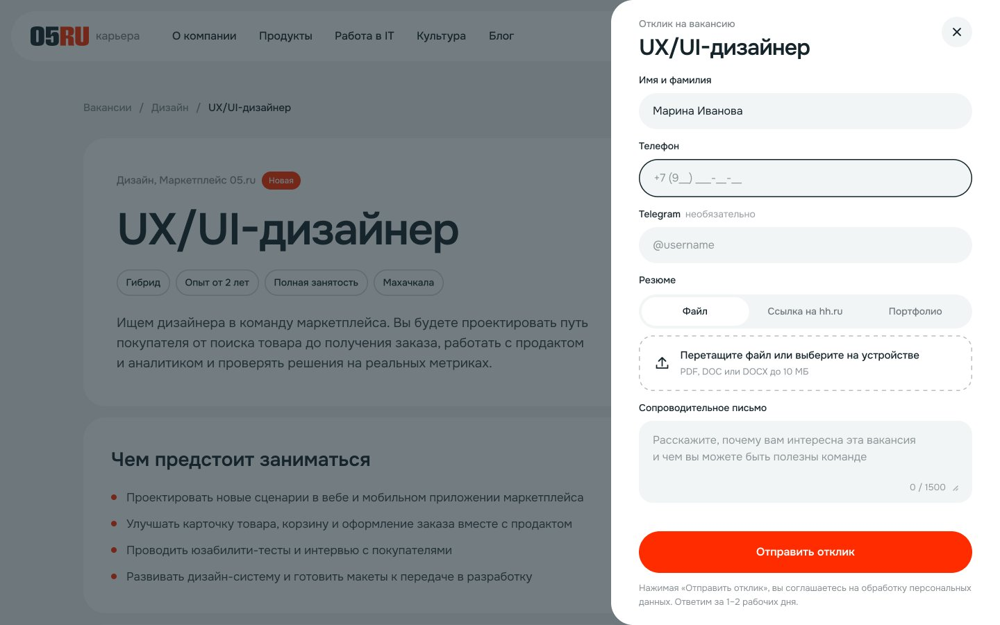
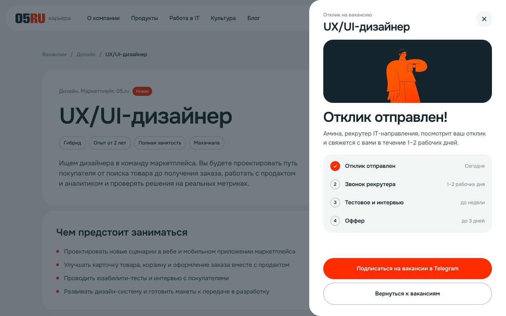
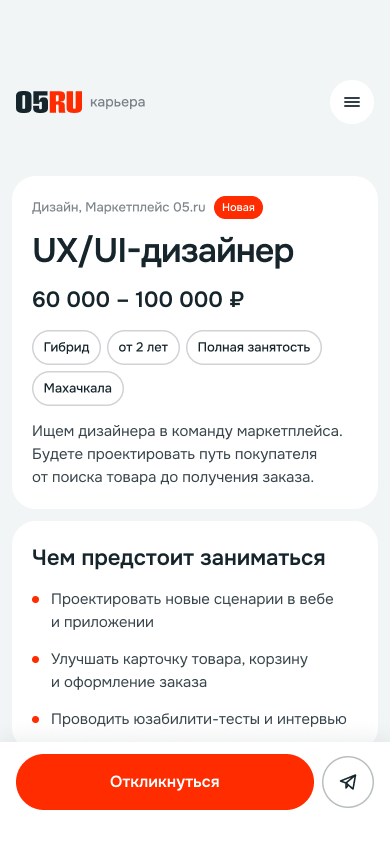
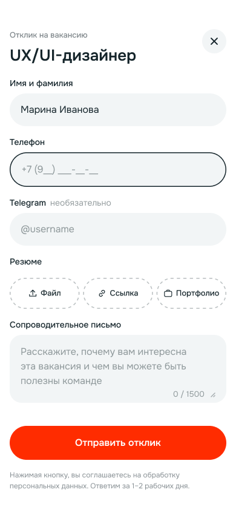
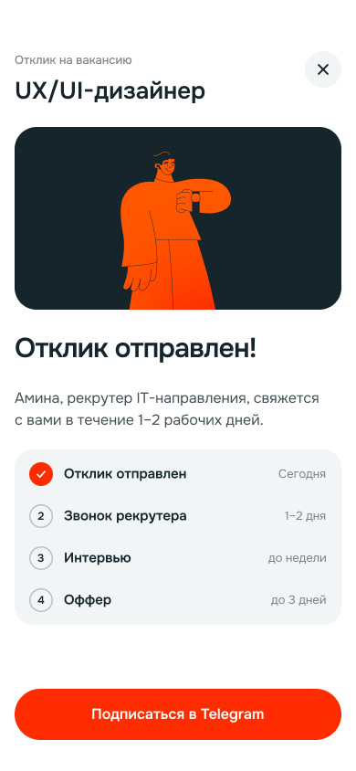

05.ru — редизайн карьерного сайта
Редизайн карьерного сайта 05.ru после ребрендинга компании. Главная, каталог и страница вакансии, путь до отклика на desktop и mobile.
Тип проекта
Редизайн карьерного сайта, проект на паузе
Моя роль
Единственный дизайнер: аудит, бенчмарк, архитектура, UI для desktop и mobile
Платформа
Web, desktop и mobile
Проект был выполнен (кроме подбора фотографий), но приостановлен из‑за реструктуризации отдела HR.
Задача
Карьерный сайт 05.ru был сделан до ребрендинга и выглядел как отдельный продукт. В прошлом редизайне нам удалось повысить конверсию откликов с 1,1% до 5,4%, но с 2022 года визуал потерял свою актуальность, а ещё стал выбоиной в визуале сайта. HR поставили задачу собрать новую страницу, которая:
- продаёт компанию как место работы
- быстро приводит кандидата к подходящей вакансии
- объясняет культуру, продукты и путь найма
- вызывает доверие через людей, цифры и реальные истории
Отдельный акцент на IT: у компании своя команда разработки, а кандидаты об этом почти не знают.
Метрика успеха: рост числа кандидатов, которые дошли до отправки отклика.
Мои обязанности
- аудит текущего сайта и бенчмарк 9 карьерных сайтов
- архитектура и навигация
- UI главной, каталога вакансий, страницы вакансии и формы отклика
- мобильные версии ключевого сценария
- работа с брендбуком после ребрендинга
Я была единственным дизайнером на проекте.
Процесс
Бриф, аудит, бенчмарк, решения по каждому пункту ТЗ, архитектура, путь кандидата до отклика и только потом визуал. Главную я пересобирала несколько раз по обратной связи: усиливала визуал, пробовала по три варианта для отдельных блоков и многое другое.
В бенчмарк вошли VK, Яндекс, Magnit OMNI, МТС, RWB, Lamoda, X5, Билайн от Only и кейс Авито от студии «Луч». Я сравнивала навигацию, порядок блоков на главной и сильные визуальные приёмы.
Решения
Поиск вакансии на первом экране
Строка поиска с городом и быстрые категории сразу под заголовком. Кандидат, который пришёл за конкретной вакансией, не листает всю страницу.
Цифры и продукты вместо общих слов
О компании рассказывают цифры и фото команды. Продукты показаны крупными карточками с логотипами, у каждого число открытых вакансий.
Отдельный блок для IT
Цифры о процессе (релиз каждую неделю, код‑ревью), направления с числом вакансий и стек. Из трёх вариантов блока в работу пошёл этот.
Культура и путь найма
Ценности, конкретные бонусы и понятные этапы найма со сроками, чтобы кандидат знал, чего ждать после отклика.
Вакансии прямо на главной
Свежие вакансии с зарплатой и кнопкой «Откликнуться», вкладки IT, Офис, Магазины и склад.
Внимание: некоторые фотографии сотрудников были заблюрены либо заменены шейдерами
Каталог с фильтрами
Фильтры по городу, формату, графику, продукту, опыту и зарплате. У каждого пункта число вакансий, выбранные фильтры видны чипсами над списком.

Отклик за минуту, без регистрации
Форма открывается боковой панелью поверх вакансии, кандидат не теряет контекст. Обязательные поля: имя, телефон и резюме файлом, ссылкой на hh.ru или портфолио. Telegram и сопроводительное письмо кандидат добавляет по своему желанию. После отправки кандидат видит, что будет дальше и в какие сроки.


Мобильная версия
На телефоне кнопка «Откликнуться» закреплена внизу экрана, форма открывается на весь экран.



Статус
Проект на паузе. Готовы главная, каталог вакансий, страница вакансии, форма и экран успешного отклика, мобильные версии ключевого сценария. Изображения в макетах пока черновые, их нужно согласовать с HR перед запуском.
Когда работа продолжится, следующий шаг — замерить текущую долю кандидатов, которые доходят до отклика, чтобы после запуска сравнить с прошлой версией.